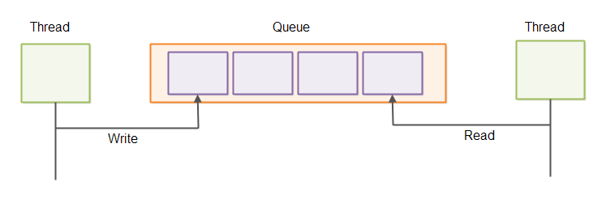

Micro Batching
Jakob Jenkov |
Micro batching is a technique where incoming tasks to be executed are grouped into small batches to achieve some of the performance advantage of batch processing, without increasing the latency for each task completion too much. Micro batching is typically applied in systems where the amount of incoming tasks is variable. The system will grab whatever incoming tasks have been received and execute them in a batch. This process is executed repeatedly.
The batch size can thus vary from 1 to a maximum upper limit set by the system, e.g. 64, 128, 1024 or whatever maximum batch size is appropriate for the system. Typically the maximum batch size is small for reasons I will explain below - hence the term micro batching.
Micro Batching Video Tutorial
Here is a video version of this tutorial:
The Latency vs Throughput Trade-off
Service oriented systems often need both low latency and high throughput. This is not always possible though. Some techniques to decrease latency also decreases throughput, and some techniques to increase throughput also increases latency. In the following sections I will explain this in more detail.
Latency
Latency is a measure of time delay in a system. In a client - server system latency can mean several things. The network latency is the time it takes for a message sent by the client until it reaches the server. The server latency is the time it takes for the server to process the request and generate a response. Both types of latency are illustrated below:
The full round-trip time of a single request until the client receives a response will be
network latency + server latency + network latency = 2 * network latency + server latency
First the request has to be sent to the server, then the server has to process the request and generate a response, and then the response has to be sent back over the network to the client.
For a system to have a fast response time both network latency and server latency must be low. Just exactly what "fast" and "slow" response times, or "high" and "low" latencies depends on the concrete system. For some systems a response time less than 1 second is good. And for some systems it has to be less than 10 milliseconds to be good.
Throughput
Throughput is a measure for how much work a system can perform in a given time interval. In the case of a client - server system the server throughput measures how many requests per time interval (typically per second) the server can process. This number means the total number of requests per second the server can process from all connected clients - not just from a single client.
The throughput as seen by the client means how many requests per time interval that particular client can send and receive responses for. Both types of throughput are illustrated below:
Batching
Batching is a technique to increase the throughput of a system. Instead of executing each task separately, the tasks are grouped into big batches and executed all together.
Batching makes sense in situations where the overhead associated with executing each task is high - if that overhead can be reduced by batching execution. To see how, let is look at an example:
Imagine a client has 10 requests it needs to send to the server. The client can send 1 request at a time, receive a response and then send the next request. The total time it will take to process those messages will be:
10 * (network latency + server latency + network latency) = 20 * network latency + 10 * server latency
If instead the client sends all 10 requests in a single message to the server, and the server processes them all sequentially, and sends back 10 responses, the total time it will take to process those requests will be:
network latency + 10 * server latency + network latency = 2 * network latency + 10 * server latency
As you can see, batching has greatly reduced the network latency involved in processing 10 requests - from 20 * network latency to just 2 * network latency. This means that the total throughput of the client-server system as seen by the client has increased.
The disadvantage of batching is the time it takes to collect the tasks to batch. If it takes the client 2 hours to collect those 10 tasks, then the latency of the system as a whole has become quite high. The first task needs to wait 2 hours before there are enough tasks to send a batch, meaning it will take 2 hours from the first tasks is collected until the client gets a response for it.
Similarly, once the batch is sent it takes the server 10 * server latency to process the batch. This further increases the latency of the first request, since it has to wait for all 10 requests to be processed before a response is received for the first request.
As you can see, batching is a technique that increases throughput but which also increases latency.
Micro Batching to the Rescue
Micro batching is a variant of batching which attempts to strike a better compromise between latency and throughput than batching does. The way micro batching does this is by waiting short time intervals to batch up tasks before processing them. I refer to this interval as a batch cycle. This short batch cycle principle is illustrated here:
How long the duration of a batch cycle should be depends on the system. For some systems 1 second might be sufficient. For other systems 50 - 100 milliseconds might be fine. And for other systems even less.
If there is a high load on the system it will receive more tasks ready for processing within each batch cycle. Thus, as the load on the system goes up, the batch size goes up, and throughput increases. The price in terms of higher latency when batch size increases is minimal.
Variable Duration Batch Cycles
For systems that require low response time, even a 50 millisecond batch cycle duration can be too long. Such systems might need to use a variable batch cycle length instead.
To achieve lower latency, yet allowing for micro batching to happen, you can loop over the input channels (inbound network connections, directories etc.) and check them all for incoming tasks (requests, messages etc.). Whatever tasks you find you execute in a micro batch. Each iteration through this loop becomes a single batch cycle.
Once the micro batch is executed, you repeat the loop immediately. This means, that the time between each batch cycle depends entirely on the amount of incoming tasks. For low load the batch size will be small, and thus the batch cycle will be shorter. For high load the batch size will grow, and thus the batch cycle duration will grow.
Variable duration batch cycles are illustrated here:
Micro Batching Use Cases
Micro batching can be used in many of the situations where batching can be used, but where lower response times are required. I will cover some of these use cases in the following sections, but these use cases are not the only ones. From these use cases you should be able to get the general picture, and be able to determine when micro batching might be useful in your own systems.
File Persistence
Writing data to disk usually comes with a significant overhead. If your system needs to write a block of data to disk for each task executed, the total overhead can be significant.

If you batch up the writes and thus only write the combined block of data to disk, the overhead associated with writing a larger block of data is usually smaller than the combined overheads of making the writes individually. The result is a system which can handle larger throughput (more data written per time unit).
Using micro batching for file persistence usually requires that the rest of the system is designed to use micro batching too. If the data blocks arrives one at a time at the file persistence component, the only way to group them into batches is to wait a short time interval before writing them to disk. If the data blocks arrive in micro batches because they are the result of micro batch processing elsewhere, grouping them into to micro batches for writing them to disk is much easier.
Inter-thread Communication
When threads communicate they usually do so via concurrent data structures. An often used structure for this purpose is a concurrent queue. This is illustrated here:
Reading and writing elements in a queue one element at a time is often associated with a higher overhead per element than when reading or writing batches of elements. You can read more about that in my tutorial about the Java Ring Buffer. Ring buffers can also be used as queues. Sending batches of messages via queues is illustrated here:
Inter-process Communication
Inter-process communication is in many ways similar to inter-thread communication. When processes communicate there is often an overhead associated with sending data outside the process - for instance to disk, unix sockets or network sockets. Therefore it can be beneficial to batch up data sent outside a process to minimize the overhead per data block (e.g. per request, message, task etc.).
I have already earlier in this tutorial explained how batching can help in a client-server scenario, which is a common case of inter-process communication.
As an additional testament to that truth, database batch updates are typically much faster than sending each update to the database separately. With a batch update more updates are sent over the network in a batch, and the database may also have the opportunity to write the updates to disk as a batch operation.
Single-threaded Servers
The single-threaded server architecture is regaining popularity these days because of its very simple concurrency model (everything runs in the same thread), and therefore its ability to utilize the CPU caches better in many cases than multithreaded concurrency models. This is also mentioned in my tutorial about concurrency models.
Single-threaded servers typically poll all open inbound connections for data to read. If an inbound connection has inbound data it is read and processed.
Single-threaded servers can benefit from micro batching. Instead of reading and processing one message from one connection at a time, the single-threaded server reads all full messages from all inbound connections and processes them in a batch.
Using a micro batching design in a single-threaded server makes it easier for other parts of that system (running inside the same server) to also use micro batching.
Traversing Large Data Structures
Some applications may need to traverse large data structures stored in memory or on disk. For instance, a database table, or a tree structure. There is a certain overhead associated with traversing large data structures. For memory based data structures the data has to be brought into the CPU L1 cache from main memory, and for disk based data structures the data has to be brought into main memory from disk, and then from main memory into the L1 cache.
Instead of traversing the whole data structure to serve just one "request" (task, message etc.) you can batch up a few requests or tasks. When traversing the data structure, each "record" or "node" in the data structure can be examined according to a batch of requests, and not just a single request.
In case any of these requests make changes to the data structure, the requests should get access to the data structure in the same order they were received from the client. That way request 2 will see each record / node of the data structure as request 1 would have left it, even if request 1 is not yet fully finished updating the whole data structure.
| Tweet | |
Jakob Jenkov | |